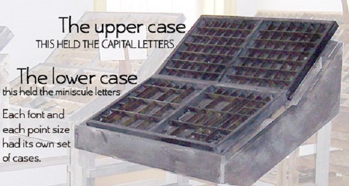

Alphabet
Table of Contents
1. Upper Case and Lower Case
Where the terms 'uppercase' and 'lowercase' came from: from the early days of the printing press. [From Twitter]
These terms originated from the common layouts of the shallow drawers called type cases used to hold the movable type for letterpress printing. Traditionally, the capital letters were stored in a separate shallow tray or "case" that was located above the case that held the small letters.

Figure 1: Upper case and Lower case